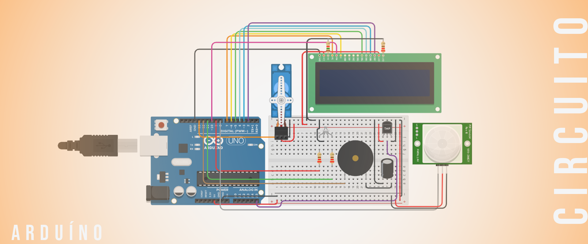

O projeto Catratec foi criado em meio à pandemia do corona vírus, e tem como objetivo dar uma solução simples para estabelecimentos de pequeno ou médio porte, conseguirem restringirem o número de pessoas que adentram seu estabelecimento, assim evitando a proliferação do vírus, além disso, a principal função da catraca, é substituir o trabalho de uma pessoa ter que medir a temperatura de todas pessoas que adentram no local, pois o próprio dispositivo pode fazer isso, evitando constrangimento e confusões. Apesar da ideia ser pensada durante a pandemia, só continuamos com o projeto pois sabíamos que ele seria útil após a pandemia, pois locais que possuem pessoas com saúde debilitada, não podem receber outras pessoas com febre ou doentes, pois caso algum vulnerável contraia uma doença, ela pode ser fatal, por isso, o projeto será útil em lugares como hospitais, laboratórios , casas de repouso e etc.
A produção do Catratec foi dividida entre os integrantes, o aluno Wesley Silva pensou no circuito e o montou utilizando o Tinkercad, com auxílio do aluno Lucas Lima. O aluno Théo Kabir programou a placa de Arduíno e seus componentes também no Tinkercad, o aluno Nicolas Coiado foi responsável pela criação visual do projeto (criação da estrutura, modelagem 3D, criação do logotipo, edição do vídeo de apresentação e criação de todos documentos envolvidos no projeto), e para isso aluno utilizou programas como Adobe Illustraitor, Adobe Photoshop, Blender com motor gráfico Cycles e o Microsoft Publisher. E o aluno Lucas Lima, além de auxiliar na montagem do circuito também fez o papel de locutor no vídeo postado no canal da Etec da Zona Leste.